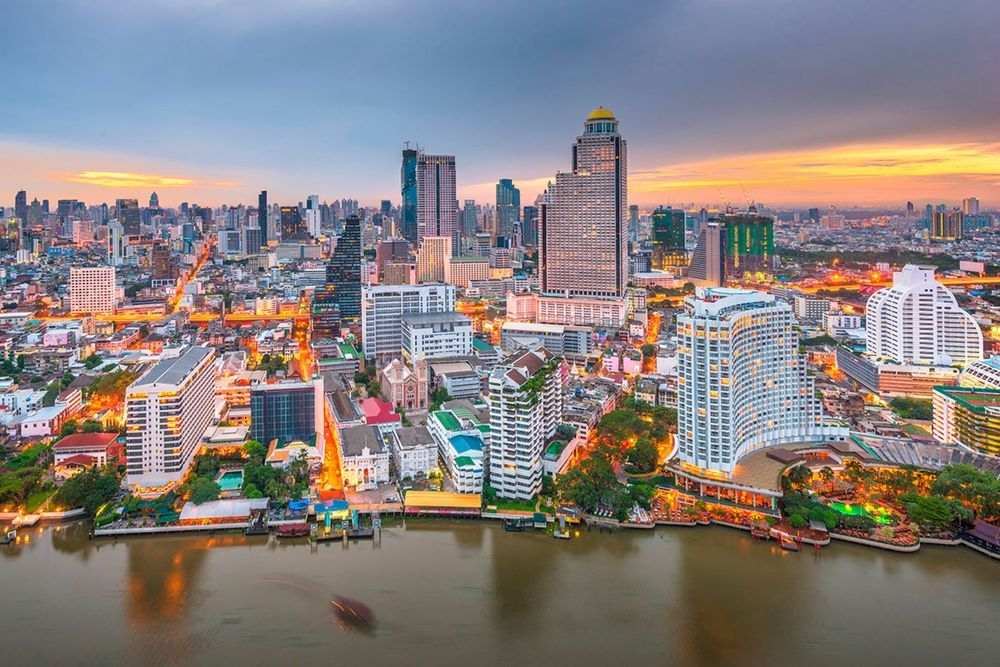
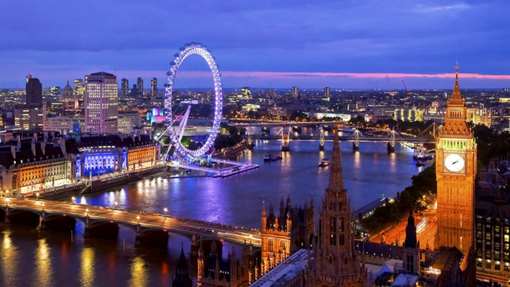
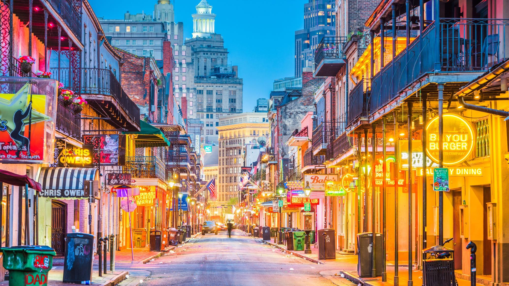
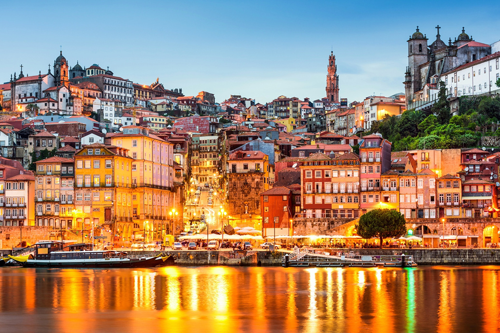
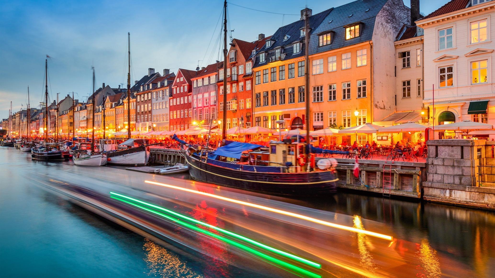

Топ 10 найвідоміших туристичних країн світу
1. Кейптаун, ПАР

2. Бангкок, Таїланд

3. Нью-Йорк, США
4. Мельбурн, Австралія

5. Лондон, Велика Британія

6. Новий Орлеан, США
7. Мехіко, Мексика

8. Порто, Португалія

9. Шанхай, Китай

10. Копенгаген, Данія